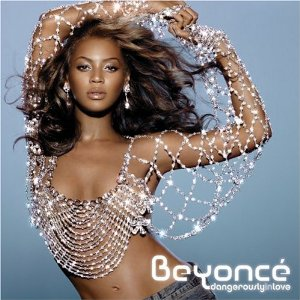

Beyoncé Knowles
Conteúdo
Introdução

Quem é Beyoncé?
Beyoncé Giselle Knowles-Carter é uma cantora, compositora, atriz, modelo, dançarina, empresária, produtora, diretora e roteirista norte-americana. Então não é de surpreender que ela receba o tírulo de Queen B
Sua Família
Beyoncé é casada com o Rapper Jaz-Z, com quem tem diversos sucessos. Tem três filhos: Blue Ivy Carter (primogenita), Rumi Carter e Sir Carter (gêmios). Sua mãe é a Tina Knowles e o seu pai é o Mathew Knowles. Suas irmãs são Solange Knowles e Bianca Lawson.
Biografia
Como começou
Cantava no coral do colégio e da igreja que frequentava. Começou sua carreira com oito anos, no grupo musical “Girl’s Tyme”, formado por garotas que cantavam e dançavam. Em 1996, o grupo mudou o nome para “Destiny’s Chil”.
Entre 1998 e 2004, Beyoncé se destacou como a principal cantora do grupo. Durante esse período já atuava na carreira solo. Em 2003, estreou com o álbum “Dangerously in Love”, que logo alcançou o primeiro lugar em vendas. A música “Crazy in Love”, que teve a participação do rapper Jay-Z, se manteve por oito semanas em primeiro lugar nas paradas. Em 2005, o grupo encerrou suas atividades.
Em 2006, Beyoncé lançou seu segundo álbum “B Day”, com canções de sua autoria, que foi indicado em diversas categorias no Grammy Award, em 2007, conquistando o Best Contemporary R&B álbum. Em 2008, a música “Single Ladies”, lançada em seu terceiro álbum, com um ritmo dançante, e letra fácil e repetitiva, alcançou o público infantil e adolescente. O sucesso mundial recebeu o Grammy Award, como a melhor Performance Vocal Feminina de R&B.
Em 2010, lançou “Beyoncé: I’Am World Tour” (DVD e CD), gravado ao vivo durante a turnê do show “I Am... Tour”, realizado entre março de 2009 e fevereiro de 2010, com repertório que alterna baladas chorosas como “Halo que foi a música mais executada nas rádios brasileiras em 2009, com canções dançantes que misturam as batidas do hip-hop à soul music das décadas de 60 e 70, alcançou o topo da Billboard Music DVD, e recebeu a classificação de disco duplo de platina.
Em 2010, Beyoncé se apresentou no Brasil, no estádio do Morumbi, em São Paulo, para um público de 60 mil pessoas. Apresentou-se também no Rio de Janeiro e em Salvador. No ano seguinte lançou seu quarto disco que permaneceu no topo das paradas do álbun Billboard 200, pela terceira semana consecutiva.
Principais premiações
A cantora é a mulher que mais venceu Grammys na história, Beyoncé é hoje uma das artistas mais importantes da música pop, não apenas pela quantidade de prêmios e hits emplacados, mas principalmente pelo seu discurso de transformação e empoderamento feminino. Ela foi eleita pela revista Forbes uma das mulheres mais poderosas do mundo.também foi a primeira mulher negra a ser headliner do Coachella.
Em 2004, iniciando sua carreira solo, ela recebeu seis indicações ao prêmio e venceu cinco, com destaque para o seu álbum de estreia, Dangerously in Love, ganhando como Melhor Álbum de R&B Contemporâneo, a música Crazy in Love, sua colaboração com Jay-Z, vencendo em Melhor Canção de R&B e Melhor Colaboração de Rap. Em 2005 teve três indicações ao lado da Destiny’s Child, mas ela não venceu. Em 2006, Beyoncé recebeu quatro indicações e venceu com Cater 2 U em Melhor Performance de R&B de uma Dupla ou Grupo. Dedicada completamente a carreira solo, Beyoncé levou mais um Grammy em 2007 pelo seu segundo álbum solo, B’Day, na categoria Melhor Álbum de R&B Contemporâneo.
Curiosidades sobre a nossa Queen B
Todos nos temos nossas peculiaridades e isso não seria diferente com os famosos e muito menos com a nossa diva Beyoncé.
3 fatos sobre a Beyoncé
- Beyoncé costumava ter medo de se apresentar no palco. Para superar seu medo, ela criou o alter ego Sasha Fierce em 2003 para ajudá-la a se apresentar. Em 2010, ela disse que não precisava mais de um alter ego para se apresentar, então agora ela é 100% Beyoncé no palco.
- O número favorito de Beyoncé é 4. O aniversário da mãe é 4 de janeiro, o dela é 4 de setembro e o do marido é 4 de dezembro. Ela também se casou com Jay-Z em 4 de abril.
- Beyoncé disse aque gosta de pizza, sua comida favorita para fugir da dieta uma vez por semana. Ela costuma pedir com molho de tomate e pimentão jalapeño.
Galeria
Aqui vamos encontrar os principais álbuns lançados pela cantora, sim são chamdos de principais porque são os meus preferidos 🤭
ÁLBUNS DA BEYONCÉ
| ÁLBUM | NOME | LANÇAMENTO |
|---|---|---|
|  | Dangerously in Love | 2003 |
 |
I am... Sasha Fierce | 2008 |
 |
4 | 2011 |
 |
Beyoncé | 2013 |
 |
Lemonade | 2016 |
| Renaissance | 2022 |